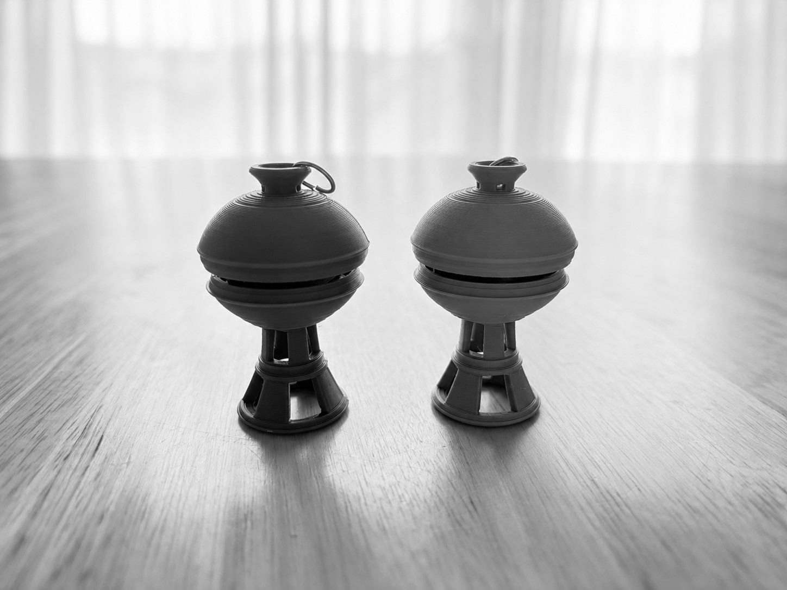

경주에서
굿즈가
팔릴까?
13개월 상권 데이터와 5개 상권, 관광 수요를 봤습니다.
숫자가 말해 주는 것과 그렇지 않은 것을 나눠 적었습니다.

왜 이 질문을 하는가
황리단길에 사람이 많다는 건 분명합니다. 다만 그 사람들이 굿즈를 사는지는 별개의 문제입니다. 이번 분석은 그 차이를 확인하는 데서 시작했습니다.
수요가 있는가
황리단길 방문객 가운데 기념품이나 굿즈를 실제로 사는 사람이 얼마나 될지.
누가, 언제 사는가
누가, 몇 시에, 무슨 요일에 사는지. 황리단길을 찾은 사람 구성과 결제하는 사람 구성이 같은지도 봤습니다.
지금 들어가도 되는가
점포가 늘어도 점포당 매출이 버티는지. 이미 빡빡한 시장인지.
“된다/안 된다”보다
“무엇을 확인했고, 무엇이 남았나”
사업성을 확정하려는 보고서는 아닙니다. 판단에 쓸 근거와 아직 빈 부분을 같이 남겼습니다.
“근거는 일부 있습니다.
모르는 것도 있습니다.”
매출 전망이나 손익분기, 시나리오는 넣지 않았습니다. 숫자에는 출처와 기간을 붙였고, 확인되지 않은 조합으로 새 수치를 만들지 않았습니다.
무엇을 근거로 판정했나
가설 세 개를 세우고 같은 기준으로 판정했습니다. H는 가설(Hypothesis)을 줄인 표기입니다.
지지
서로 다른 자료 두 개 이상이 같은 쪽을 가리킬 때. 기간도 밝힐 수 있어야 합니다.
부분 지지
방향은 맞지만 자료가 하나이거나 기간이 짧을 때.
검증 대기
판정에 필요한 원자료가 없을 때. 추정으로 메우지 않고 그대로 둡니다.
매출 변동은 유동보다
결제 건수와 더 가깝다
건당 결제액이 거의 일정하다면, 매출이 흔들리는 이유는 사람 수보다 결제 횟수에 있을 거라고 봤습니다.
매출은 오후·20~30대·여성에
몰리고, 유동 연령과 다르다
황리단길을 찾은 사람과 실제로 결제하는 사람이 다를 수 있습니다. 상품과 마케팅을 짤 때 먼저 볼 부분입니다.
점포가 늘어도
업소당 매출은 희석되지 않는다
시장이 커지는지, 이미 포화라서 나눠 먹는지 가르는 문제입니다. 들어갈지 정할 때 바로 필요합니다.
자료에서 확인한 것
시장, 고객, 수요, 경쟁 순으로 봤습니다. 숫자마다 출처와 기간을 적었습니다.
3-1 시장: 점포는 늘었고 매출은 유지됐다
업소당 월평균 매출 (만원)
점포 수와 매출의 방향
점포가 두 개 늘어난 사이 최근 3개월 업소당 매출은 오히려 올랐습니다. 다만 2025년 10월 34개까지 내려간 뒤 반등한 것이라, 추세인지 단기 움직임인지는 아직 구분하기 어렵습니다.
3-2 고객: 황리단길을 찾은 사람과 결제하는 사람은 다르다
연령 구성: 매출과 유동 (%)
같은 모집단 아님주말 비중: 기준에 따라 62.5%와 40.1%
주말 하루 평균 매출이 평일 하루 평균보다 높다는 뜻입니다. 주말에 손님이 몰린다고 보는 쪽에 가깝습니다.
한 주 전체 매출에서 토·일이 차지하는 비중입니다. 7일 중 2일이 40%를 만드는 셈입니다.
3-3 수요: 전체로는 늘었지만 곳마다 다르다
관광지 입장객 2022 → 2025 (만 명)
3-4 경쟁: 44%가 두 동에 몰려 있다
점포당 월수요 (명)
황리단길 일대 · 유동 대비 매출 지수 216.1 (이태원 108.9)
상권리포트 점포 38개 기준. 같은 수요를 더 많은 점포가 나눠 갖는 셈.
3-5 상점과 상품: 현장 수집 71곳
황리단길은 먹거리 중심 상권입니다. 굿즈·소품 판매는 체험·공방 21곳과 일부 카페에서 이뤄지며, 전문 매장은 많지 않습니다. 직접적인 경쟁은 적지만, 고객층은 기존 체험·공방 방문객과 겹칩니다.
홍보는 SNS가 중심이며, 실제 판매형 스토어는 10곳 중 3곳입니다. 온라인 판매의 성장 여지가 있는 동시에, 현재는 오프라인 중심 상권일 가능성도 있어 단정하기 어렵습니다.
등록 상품의 약 3분의 2는 식음·디저트이며, 소품류는 87건(27.8%)입니다. 소품이 주력 상품은 아니지만, 일정 수준의 상품군은 형성되어 있는걸 확인할 수 있습니다.
· H3(점포가 늘어도 매출 유지)와 함께 보면, 늘어난 점포가 식음·체험 쪽일 가능성을 시사합니다.
· 해석 B(기념품점 수요 방향)에 “상품 단위로 무엇이 실제로 등록돼 있는가”라는 근거를 더합니다.
· H1이 막힌 이유(굿즈 단독 매출 없음)를 보완하는 유일한 상품 단위 자료입니다.
판정: 확실한 건 하나
같은 기준을 적용하니 H2만 지지였습니다. H3은 조건부, H1은 자료가 없어 판정하지 못했습니다.
고객과 시간대는
근거가 모였다
매출의 20~30대 비중은 54.3%, 여성은 62.8%, 14~18시는 45.4%입니다. 매출 특성과 요일, 시간대 자료가 같은 방향을 가리켰습니다.
점포는 늘고
매출은 유지됐다
점포는 36개에서 38개로 늘었고 업소당 매출은 1,642만 원(최근 3개월 1,755만 원)입니다. 방향은 맞지만 13개월치뿐이고, 점포 수와 매출의 전체 상관은 −0.10입니다.
매출 분해는
아직 모른다
건당 결제액이 ±5% 안에서 거의 변하지 않아 결제 건수 쪽일 거라 짐작할 수는 있습니다. 하지만 월별 건수와 유동 원자료가 없어 확인은 못 했습니다.
단가가 거의 일정하다는 건 확인했습니다. 매출이 흔들릴 때 같이 움직였을 쪽은 건수라고 보는 게 자연스럽습니다. 다만 월별 건수를 볼 수 없어서 “그럴 수 있다” 이상은 말하지 않습니다.
자료가 답하지 못한 것
자료가 없다는 말로 끝내지 않았습니다. 어떤 판단이 막히는지까지 적었습니다.
01굿즈 단독 매출·가격이 없다+
022025년 권역 방문 실측이 12개월 비어 있다+
03관측 기간이 13개월뿐이다+
04주말 정의가 두 가지다+
05서울 패널 모델로는 황리단길을 직접 맞히지 못했다+
타겟과 시간대,
들어갈 방향
20~30대 여성, 오후 시간대, 점포가 늘어도 매출이 유지된 흐름, 황남·황오에 모인 점포. 실행 계획을 세울 때 전제로 둘 수 있는 것들입니다.
매출 규모와
손익분기
굿즈 단독 판매량과 객단가가 없고 매출 분해도 확인되지 않았습니다. 이 자료로는 “얼마 벌까”에 답할 수 없습니다.
확인은 못 했지만, 짐작할 수 있는 것
확인된 결론이 아니라 해석입니다. 각 항목에 틀리는 조건도 적었습니다.
타겟은 20~30대 여성,
시간은 오후
매출 구성이 유동 구성과 다릅니다. 매출에서 20~30대가 차지하는 비중이 60대보다 훨씬 큽니다.
기념품점 수요의 방향은
굿즈에도 비슷할 듯
같은 상권, 같은 방문객을 상대합니다. 업종 전체 매출이 유지된다면 굿즈도 비슷한 환경에 놓입니다.
주말·오후 운영이
유리할 것
주말 하루 평균 매출이 평일보다 높고 결제는 오후에 몰립니다. 운영 시간과 인력 배치를 정할 때 참고할 수 있습니다.
객단가, 전환율, 재방문율, 월 매출 규모는 넣지 않았습니다. 굿즈 단독 판매 자료 없이 이 숫자를 만들면 근거가 아니라 추정이 됩니다. 필요한 자료는 다음 장에 적었습니다.
결론: 근거는 일부, 조건은 붙습니다
무엇이 확인됐고, 무엇을 더 봐야 하는지로 정리했습니다.
가능성은 보이지만,
확정하려면 자료가 더 필요합니다.
황리단길은 점포가 늘어도 점포당 매출이 유지됐고, 매출은 20~30대 여성과 오후 시간대에 몰렸습니다. 기념품점 44%가 황남·황오에 모여 있어 고를 거리가 있는 상권이기도 합니다. 다만 굿즈 단독 매출과 전환율, 2025년 방문 실측이 없습니다. 사업성 예측이 아니라 탐색적 근거로 읽어야 합니다.
지금 할 수 있는 결정
- 20~30대 여성·오후 중심의 상품·운영 가설
- 황남·황오 점포 집적을 보고 입지 후보 좁히기
- 주말·오후 인력 배치의 초기 가정
실행 전 확인 세 가지
- 월별 결제 건수·유동 원값: H1 판정
- 굿즈 단독 가격·판매 실측: 사업성 직접 판단
- 2025년 권역 방문 실측: 추세 판단
작은 규모로
먼저 팔아 본다
굿즈 단독 판매량과 객단가, 전환율은 자료가 아니라 직접 팔아 봐야 나옵니다. 짧게라도 시범 운영을 하는 게 가장 빠릅니다.
가설을
분기마다 다시 본다
13개월은 추세를 확정하기에 짧습니다. 분기마다 점포, 매출, 유동을 다시 보고 판정을 고칩니다.
기준을 바꾸지 않고
숫자만 갱신한다
지지, 부분 지지, 검증 대기의 기준은 그대로 둡니다. 결과가 달라져도 기준을 나중에 바꾸지 않습니다.
고객과 시간대 측면에서는 유의미한 근거를 확보했습니다. 점포와 매출에서도 긍정적인 흐름이 확인되지만, 분석 기간이 짧아 추가 확인이 필요합니다. 매출 구조는 자료 보완 후 판단할 수 있습니다.
현재까지 확인된 사실과 추가 검증이 필요한 부분을 구분해 제시했으며, 본 자료는 사업성에 대한 확정적 보증이 아닌 의사결정을 위한 참고 자료입니다.
수치 재검증
발표안 숫자를 원자료로 다시 계산했습니다. 조건부 3건, 제외 2건.
| 수치 | 계산·출처 | 판단 |
|---|---|---|
| 총량 지수 110.6 | (2,801,046×3.9%×20,000) ÷ (2,576,840×4.6%×16,667) | 조건부 사용 방문 소스 혼합·설문 표본 |
| 전국 1,266만 | 상권리포트 전국 최근 3개월 평균 (13개월 1,314만) | 사용 동일 단위·3개월 창 |
| 34 → 38 | 2025-10 저점 34 → 2026-08 38 (시작 36) | 조건부 사용 저점·현재 병기 |
| R² 0.791 | E0(고정 특성만 사용, 2021~24 학습→2025 검증) GradientBoosting 0.790 · RandomForest 0.838 | 제외 현행 결론(E1 0.830 < 0.909)과 충돌 |
| 중요도 0.296 · 2.8배 | RF·GB는 유사업종 점포수 0.299 1위, LGBM은 직장인구 0.189 1위 | 제외 “3개 모델 공통 1위” 불성립 |
판정에 쓴 자료
상권분석리포트 5종(카드사·통신사 추정) · 상권정보 API(등록) · 권역 실측 · know.tour 입장객(실측) · 국민여행조사(설문) · 가격 210건(수집) · 서울 패널 모델(2021~2025)
같은 경로로 다시 계산
EDA: notebooks/EDA리포트.ipynb
도표: scripts/regen_insight_figs.py
예측 수치: scripts/model_report.py
기준일 2026-11-24 · 원자료 정정 시 수치가 바뀝니다.